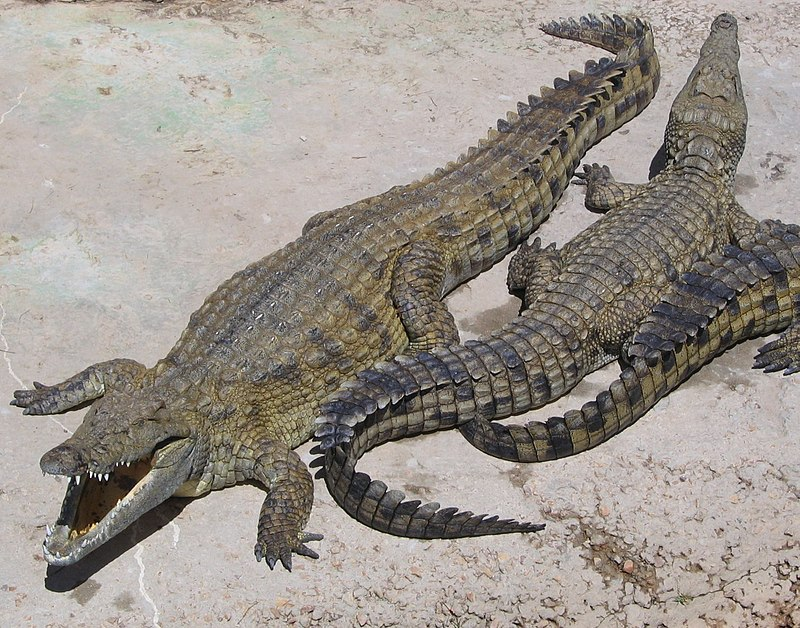

Crocodylidae
(Crocodílidos)

Hábitat
Son reptiles que viven en las áreas tropicales de África, Asia, América y Australia. Son excelentes nadadores gracias a que tienen piel entre los dedos de las patas traseras para ayudarlos a nadar con mayor rapidez, su apariencia es parecida a la de las aletas de buceo. Suelen vivir en ríos de corriente lenta y se alimentan de una amplia variedad de animales, preferentemente vivos.
Caracteristicas
-
Son animales extensos, con forma de tronco, de cuerpo macizo que comienza en un morro alargado que esconde un montón de dientes cónicos, y finaliza en una cola larga e ideal para impulsar el nado. El conjunto está recubierto por una piel áspera, dura y compuesta de escamas.
-
Su tamaño total varía según la especie, pero pueden rondar los 2 y 3 metros de largo, con especies más pequeñas que no superan el metro, y especies particularmente grandes capaces de alcanzar los 7 metros de largo. Su peso, similarmente, puede llegar a los 2000 kg en las especies más voluminosas.
-
Son excelentes nadadores, y también pueden andar en tierra firme arrastrándose sobre el vientre o caminando sobre sus patas, y algunas especies incluso pueden galopar a buena velocidad.
-
Sus ojos y nariz se hallan en la parte superior de la cabeza, permitiendo que el resto del cuerpo esté completamente sumergido bajo el agua. De este modo los cocodrilos pueden aproximarse sigilosamente a sus presas para el ataque. Poseen una mordida muy poderosa.
-
Pasan la mayor parte de sus días inmóviles bajo el sol, ahorrando las energías de sus metabolismos particularmente lentos, de naturaleza ectotérmica, o sea, de sangre fría.